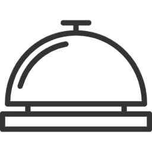
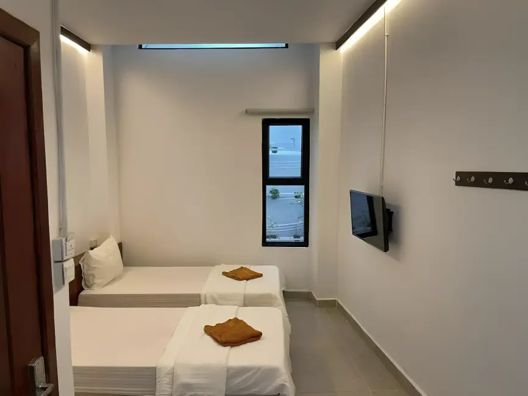

Located in the bustling heart of Phnom Penh, Cambodia, Onederz Phnom Penh is a vibrant hub for travelers seeking comfort and connection. Our hostel blends a social atmosphere with modern amenities, offering clean dorms, private rooms, a rooftop pool, and lively common areas. Whether you're exploring the Royal Palace, Riverside, or the city's vibrant nightlife, our team ensures a memorable stay. Dive into the energy of Cambodia’s capital with us!
Your Stay: Comfort & Connection
Your Space
Comfy Dorms
Private Rooms
Hostel Perks
Rooftop Pool
Social Common Areas
Bar & Restaurant
Free Wi-Fi
Guest Services
24/7 Reception
Tours & Transport
Laundry Service
Scooter Rentals
Sleep & Socialize
Choose from mixed or female-only dorms with privacy curtains or upgrade to a private room with ensuite bathrooms. All include free Wi-Fi, AC, and secure lockers.
Discover more
Explore Phnom Penh
Join our Killing Fields & Genocide Museum tours, and explore the city with our exciting activities.
Discover more
Eat & Drink
Our rooftop bar serves cocktails and more with riverside views, while the restaurant offers Asian and Western dishes.
Discover more
Our Location
Onederz Phnom Penh is just 5 minutes from Riverside and close to the Royal Palace, National Museum, and vibrant markets.
Getting to Onederz Phnom Penh: A Guide for Our Guests
Onederz Phnom Penh is ideally situated near the vibrant Riverside area, making it an excellent base for exploring the city. Here's a detailed guide on how to reach us, whether you're arriving by air or bus:
I. From Airport›
Distance and Estimated Travel Time:
Distance: Onederz Phnom Penh is approximately 10-13 kilometers (6-8 miles) from Phnom Penh International Airport.
Travel Time: The journey typically takes 15-40 minutes, depending on your chosen mode of transport and traffic conditions. During peak hours, it might take a bit longer.
Transportation Options from the Airport:
1. Taxi (Fastest & Most Comfortable):
Where to find: Official airport taxi stands are located just outside the arrivals exit. Look for authorized taxi booths where you can arrange a fixed-price ride.
Cost: Around $8 - $15 USD. It's advisable to confirm the price before departing.
Time: Approximately 15-20 minutes in light traffic.
Recommendation: This is the most hassle-free option, especially if you have luggage or prefer direct transport.
2. Tuk-Tuk (Authentic & Budget-Friendly):
Where to find: You'll see many tuk-tuks just outside the airport. Negotiate the fare with the driver before starting your journey.
Cost: Around $7 - $9 USD. Bargaining is common.
Time: Approximately 20-40 minutes, offering a more open-air experience of the city.
Recommendation: A popular and more economical way to experience local transport.
3. City Bus (Cheapest):
Where to find: The bus stop for Route 3 is about 100 meters away from the airport grounds, just outside the parking lot.
Cost: Approximately 1,500 Cambodian Riel (about $0.40 USD). It's best to have exact change or small USD bills.
Time: Around 30-45 minutes to reach the relevant stop.
Route: Take City Bus Line 3. This bus travels from the airport towards the city center. You'll want to get off at a stop near the Night Market (Street 106) or Sisowath Quay (near Titanic Restaurant). From there, Onederz Phnom Penh is just a short walk away. Buses typically operate from around 5:00 AM to 8:30 PM and run every 15-30 minutes.
Recommendation: This is the most economical option, perfect for budget travelers. Please note that if you have a lot of bulky luggage, it might be less convenient as there isn't much dedicated space.
II. From Bus Stations›
Phnom Penh has several bus stations, and your arrival point will depend on the bus company you travel with.
For Bus Companies that Drop Off NEAR Onederz Phnom Penh (e.g., some Giant Ibis, Mekong Express, Virak Buntham services often use or have stops close to the Riverside area):
Distance: These stations or drop-off points are typically within 0.5 - 2 kilometers (0.3 - 1.2 miles) of Onederz Phnom Penh.
Travel Time:
Walking:5-20 minutes on foot, depending on your exact drop-off and amount of luggage.
Tuk-Tuk/Moto-dop (Motorbike taxi):2-5 minutes.
How to Get Here:
Walk: If your luggage is light and the weather is agreeable, walking is a great way to take in the immediate surroundings.
Tuk-Tuk/Moto-dop: You will easily find tuk-tuks or moto-dops waiting at bus drop-off points. Agree on a price before you start your journey. It should be around $2-$3 USD for a tuk-tuk, or less for a moto-dop.
For Bus Companies that Drop Off FARTHER from Onederz Phnom Penh (e.g., some major bus terminals like "Phnom Penh Bus Station" or company-specific offices in more distant districts):
Distance: These can be 3-7 kilometers (2-4.5 miles) from Onederz Phnom Penh.
Travel Time:
Tuk-Tuk:10-25 minutes, depending on traffic.
Taxi:10-20 minutes, depending on traffic.
How to Get Here:
Tuk-Tuk: The most common and convenient way. You'll find many tuk-tuks at these larger bus stations. Always negotiate the price before you get in. Expect to pay around $4-$7 USD.
Taxi: Taxis are also available at larger bus terminals and offer a more comfortable, air-conditioned ride. Confirm the fare before departing.
General Tips for your arrival:
Currency: The local currency is the Cambodian Riel (KHR), but US Dollars (USD) are widely accepted everywhere. ATMs are available at the airport and in most city areas.
Onederz Contact: If you encounter any issues or need directions, please don't hesitate to call the hostel directly.
We look forward to welcoming your guests to Onederz Phnom Penh!
The best rate guaranteed!! Book directly with us and get the best price now!
Comfort & Connection
×
Your Space
Comfy Dorms
Private Rooms
Hostel Perks
Rooftop Pool
Social Common Areas
Bar & Restaurant
Free Wi-Fi
Guest Services
24/7 Reception
Tours & Transport
Laundry Service
Scooter Rentals
Dorms & Private Rooms
Whether you're looking to mingle and save, or prefer a tranquil retreat, our accommodations are designed to meet your needs. Our dorm rooms foster a vibrant community feel with cozy, private bunk spaces, while our private rooms offer a personal sanctuary complete with en-suite amenities. Both options prioritize your comfort with quality furnishings and essential features for a memorable stay.
4 Bed Dormitory
Perfect for: Intimate connections
Our coziest dorm, ideal for solo adventurers looking for a friendly shared space or small groups. Basic yet comfortable.
Max People: 4 | Shared Bathroom | Free Wifi
6 Bed Dormitory
Perfect for: New friendships
A vibrant common room designed for meeting fellow travelers and sharing stories. Simple and functional.
Max People: 6 | Shared Bathroom | Free Wifi
8 Bed Dormitory
Perfect for: Small groups
A spacious dorm perfect for groups of friends or making new connections in a lively setting. Offers essential comfort.
Max People: 8 | Shared Bathroom | Free Wifi
10 Bed Dormitory
Perfect for: Social travelers
A bustling dorm with plenty of opportunities to meet fellow backpackers and share experiences. Basic and social.
Max People: 10 | Shared Bathroom | Free Wifi
12 Bed Dormitory
Perfect for: The social butterfly
Our largest dorm, bustling with energy and opportunities to connect with people from around the globe. A simple, lively choice.
Max People: 12 | Shared Bathroom | Free Wifi
18 Bed Dormitory
Perfect for: Ultimate social experience
Our most expansive dorm, designed for travelers who thrive on interaction and meeting a diverse range of people. Get the full backpacker experience.
Max People: 18 | Shared Bathroom | Free Wifi
Double Room (Main Building)
Perfect for: Couples or solo travelers
A simple and comfortable private retreat with a double bed, offering a peaceful escape in our main building.
Max People: 2 | Private Bathroom | Free Wifi

Twin Room (Main Building)
Perfect for: Friends traveling together
Comfortable twin beds provide a basic yet great base for two, with all the privacy you need in our main building.
Max People: 2 | Private Bathroom | Free Wifi
Triple Room (Main Building)
Perfect for: Small groups or families
More space and flexible bedding options for three, ensuring everyone's comfort in our main building. A practical choice.
Max People: 3 | Private Bathroom | Free Wifi
Double Room (Annex Building)
Perfect for: Budget-conscious couples or solo travelers
A simple and affordable private room in our annex building, perfect for a no-frills, comfortable stay.
Max People: 2 | Private Bathroom | Free Wifi
Dorms: Connect & Unwind
We believe a great stay balances privacy with community! Our dorm rooms offer both, with bunk beds designed like cozy boxes that give you your own private space. Inside, you'll find everything you need: an electric socket, a reading lamp, and an accessory case. Even though we're a budget-friendly accommodation, we don't compromise on comfort; our mattresses, blankets, and pillows are as good as those in a hotel. Plus, all our rooms come with well-maintained air-conditioners and exhaust fans to keep you comfortable.
To ensure your peaceful sleep isn't disturbed, we've placed our shared bathrooms conveniently outside the dorm rooms. This means you can get all the rest you need to wake up refreshed and ready to connect with fellow travelers.
Keep your belongings safe and sound in our large lockers, measuring 40cm x 50cm x 80cm. We even provide padlocks if you don't have your own. So, you'll get two keys when you check in: one for your room door and another for your personal locker. We look forward to welcoming you and helping you make the most of your trip!
Private Room: Your Social Base
Discover the perfect balance of personal space and social opportunity in our private rooms. Each room is thoughtfully designed to be your comfortable base, featuring a refreshing air conditioner and peace of mind with your own electronic digital security box. We've included an electric kettle to kickstart your mornings, and bottles of water to keep you hydrated. Stay connected with loved ones or plan your next outing using our free Wifi, and enjoy the luxury of fresh towels and more.
Forget shared facilities! You'll love the convenience of your private bathroom right inside the room. With a clever partition wall and curtain separating the shower booth and toilet, you'll have all the space and privacy needed to get ready for a bustling day of sightseeing or to relax after a fun social evening.
Experiences
Discover Phnom Penh with Our Daily Tours & Activities!
Uncover the rich history, vibrant culture, and local charm of Cambodia's capital right from our doorstep. We offer convenient and insightful tours and activities to help you experience the best of Phnom Penh.
Killing Fields & S21 Genocide Museum
Join our daily shared tour for a profound journey into Cambodia's past. This essential tour provides a comprehensive understanding of the Khmer Rouge regime.
What you'll experience:
Choeung Ek Genocidal Centre (The Killing Fields): A memorial site offering a somber but important look at a tragic period in Cambodian history.
Tuol Sleng Genocide Museum (S-21 Prison): Explore the former high school turned brutal interrogation and detention center.
Tour Options:
Join our Daily Shared Tour: A budget-friendly and social way to visit these significant sites with fellow travelers. Our shared tours depart daily – ask our reception for departure times!
Private Tuk-Tuk: Prefer a more personalized experience at your own pace? We can arrange a private tuk-tuk for you with a driver who will wait while you explore each location.
Explore More of Phnom Penh with Our Diverse Activities!
Beyond the essential history, dive deeper into Cambodian life with our other exciting tours and activities:
Silk Island Tour (Koh Dach): Escape the city bustle for a serene half-day or full-day trip to Koh Dach. Discover traditional Cambodian silk weaving, explore rural villages, and experience a quieter side of local life on this charming island.
Sightseeing Tour: See the city's highlights! Our sightseeing tours typically cover iconic landmarks such as the Royal Palace & Silver Pagoda, the National Museum, and Wat Phnom, giving you a great overview of Phnom Penh's beauty and history.
Khmer Class: Learn some basic Khmer phrases and get an introduction to the local language. A fun and interactive way to connect with the culture!
Walking Tour: Explore Phnom Penh's hidden gems and vibrant street life on foot. Our walking tours often take you through local markets, charming backstreets, and past historical architecture, offering a unique perspective of the city.
Cooking Class: Immerse yourself in Cambodian culinary traditions! Learn to prepare authentic Khmer dishes using fresh, local ingredients. You'll get hands-on experience and enjoy the delicious results of your efforts.
Social Night: Connect with other travelers from around the world right here! Our social nights are a great opportunity to relax, share stories, and make new friends over drinks and good vibes.
Important Note for All Tours & Activities:
Times and prices for our tours and activities may vary depending on the day. Please speak to our friendly staff at reception for the most current schedule, pricing, and to book your spot! They are here to help you plan your perfect Phnom Penh adventure.
Eatery
The Rooftop Riverview
Ascend to our rooftop on the 4th Floor, where an unparalleled dining experience awaits with sweeping, panoramic river views of Phnom Penh. Enjoy the open air and stunning vistas as you dine here at our property.
Open everyday
From 7:00 AM - 11:00 PM (night)
We're delighted to offer convenient and delicious dining experiences at two fantastic locations within our property: on the Ground Floor and at The Rooftop Riverview (4th Floor), both serving the same great menu.
Opening Hours & Service
Our kitchens are open every day from 7:00 AM for all-day dining. You can enjoy our full menu, including breakfast, lunch, and dinner, throughout the day. The last food order is at 10:45 PM, and both dining areas close at 11:00 PM (night).
Your Dining Choices
Whether you prefer the cozy ambiance of our Ground Floor spot or the breathtaking river views from our Rooftop, you'll find a diverse menu to satisfy every craving. We offer a delicious selection of Asian and Western dishes, complemented by refreshing fresh shakes and juices, as well as a wide range of soft drinks, cocktails, beer, and wine. We look forward to serving you!
Onederz Phnom Penh is just 5 minutes from Riverside and close to the Royal Palace, National Museum, and vibrant markets.
Good to know
×
Getting to Onederz Phnom Penh: A Guide for Our Guests
Onederz Phnom Penh is ideally situated near the vibrant Riverside area, making it an excellent base for exploring the city. Here's a detailed guide on how to reach us, whether you're arriving by air or bus:
I. From Airport›
Distance and Estimated Travel Time:
Distance: Onederz Phnom Penh is approximately 10-13 kilometers (6-8 miles) from Phnom Penh International Airport.
Travel Time: The journey typically takes 15-40 minutes, depending on your chosen mode of transport and traffic conditions. During peak hours, it might take a bit longer.
Transportation Options from the Airport:
1. Taxi (Fastest & Most Comfortable):
Where to find: Official airport taxi stands are located just outside the arrivals exit. Look for authorized taxi booths where you can arrange a fixed-price ride.
Cost: Around $8 - $15 USD. It's advisable to confirm the price before departing.
Time: Approximately 15-20 minutes in light traffic.
Recommendation: This is the most hassle-free option, especially if you have luggage or prefer direct transport.
2. Tuk-Tuk (Authentic & Budget-Friendly):
Where to find: You'll see many tuk-tuks just outside the airport. Negotiate the fare with the driver before starting your journey.
Cost: Around $7 - $9 USD. Bargaining is common.
Time: Approximately 20-40 minutes, offering a more open-air experience of the city.
Recommendation: A popular and more economical way to experience local transport.
3. City Bus (Cheapest):
Where to find: The bus stop for Route 3 is about 100 meters away from the airport grounds, just outside the parking lot.
Cost: Approximately 1,500 Cambodian Riel (about $0.40 USD). It's best to have exact change or small USD bills.
Time: Around 30-45 minutes to reach the relevant stop.
Route: Take City Bus Line 3. This bus travels from the airport towards the city center. You'll want to get off at a stop near the Night Market (Street 106) or Sisowath Quay (near Titanic Restaurant). From there, Onederz Phnom Penh is just a short walk away. Buses typically operate from around 5:00 AM to 8:30 PM and run every 15-30 minutes.
Recommendation: This is the most economical option, perfect for budget travelers. Please note that if you have a lot of bulky luggage, it might be less convenient as there isn't much dedicated space.
II. From Bus Stations›
Phnom Penh has several bus stations, and your arrival point will depend on the bus company you travel with.
For Bus Companies that Drop Off NEAR Onederz Phnom Penh (e.g., some Giant Ibis, Mekong Express, Virak Buntham services often use or have stops close to the Riverside area):
Distance: These stations or drop-off points are typically within 0.5 - 2 kilometers (0.3 - 1.2 miles) of Onederz Phnom Penh.
Travel Time:
Walking:5-20 minutes on foot, depending on your exact drop-off and amount of luggage.
Tuk-Tuk/Moto-dop (Motorbike taxi):2-5 minutes.
How to Get Here:
Walk: If your luggage is light and the weather is agreeable, walking is a great way to take in the immediate surroundings.
Tuk-Tuk/Moto-dop: You will easily find tuk-tuks or moto-dops waiting at bus drop-off points. Agree on a price before you start your journey. It should be around $2-$3 USD for a tuk-tuk, or less for a moto-dop.
For Bus Companies that Drop Off FARTHER from Onederz Phnom Penh (e.g., some major bus terminals like "Phnom Penh Bus Station" or company-specific offices in more distant districts):
Distance: These can be 3-7 kilometers (2-4.5 miles) from Onederz Phnom Penh.
Travel Time:
Tuk-Tuk:10-25 minutes, depending on traffic.
Taxi:10-20 minutes, depending on traffic.
How to Get Here:
Tuk-Tuk: The most common and convenient way. You'll find many tuk-tuks at these larger bus stations. Always negotiate the price before you get in. Expect to pay around $4-$7 USD.
Taxi: Taxis are also available at larger bus terminals and offer a more comfortable, air-conditioned ride. Confirm the fare before departing.
General Tips for your arrival:
Currency: The local currency is the Cambodian Riel (KHR), but US Dollars (USD) are widely accepted everywhere. ATMs are available at the airport and in most city areas.
Onederz Contact: If you encounter any issues or need directions, please don't hesitate to call the hostel directly.
We look forward to welcoming your guests to Onederz Phnom Penh!
 Rooftop Pool
Rooftop Pool Social Common Areas
Social Common Areas Bar & Restaurant
Bar & Restaurant Free Wi-Fi
Free Wi-Fi Tours & Transport
Tours & Transport Scooter Rentals
Scooter Rentals